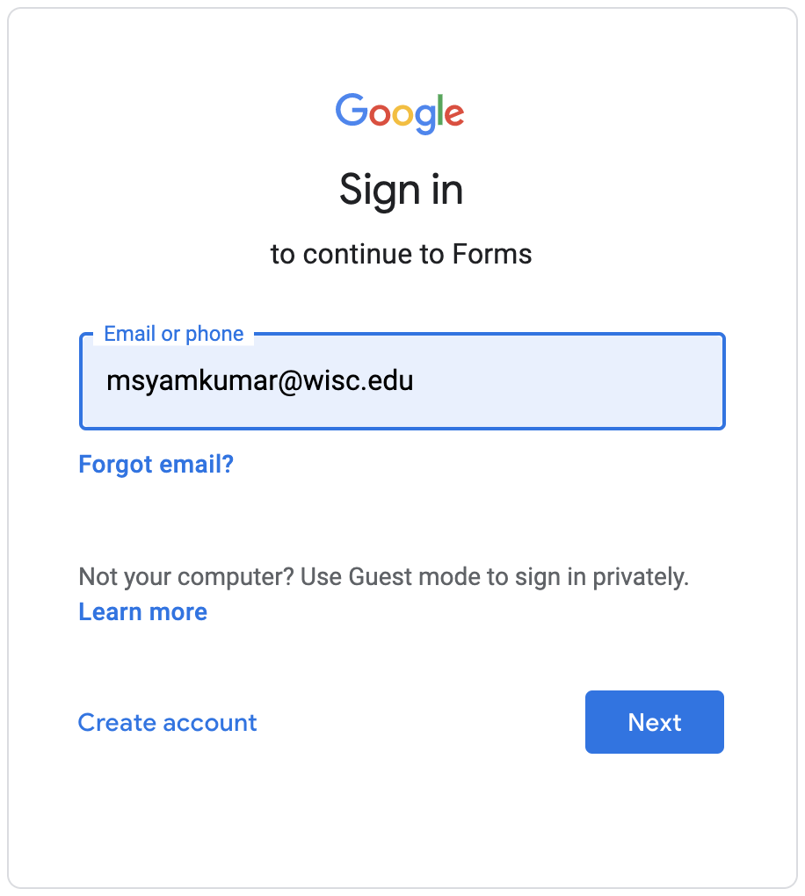

For non-anonymous forms, we will often require you to fill in this form using your "@wisc.edu" signin; this allows us to verify who you are. If you try using a different signin on one of these, you'll see an error saying "You need permission: This form can only be viewed by users in the owner's organization." If Google automatically signs in for you, please open the link in a "New Incognito Window" in Chrome.
1. Student Information Survey: To help us better understand who is taking this class, please fill this out.
2. Grading Issues: Fill this if there was a grading mistake or you got permission from your TA to resubmit. Please check out the Contact Info page for more details on when you should fill this form.
3. Feedback Form: If you have any issues with the class or suggestions for improvement, please let us know sooner rather than later; we may be able to make changes more rapidly than you might imagine. This is optionally anonymous, but it's always nice to know who you are (sometimes it makes sense to have followup conversations).
5. Thank You! Has a TA or mentor provided exceptional help, during office hours, lab, etc? Thank them by filling out this form, and I'll pass along the feedback.
For forms requiring authentication, make sure you sign in with your @wisc.edu, like this:
